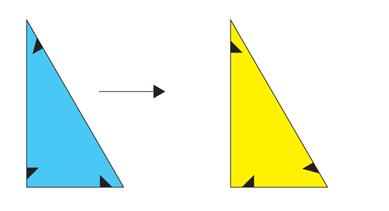
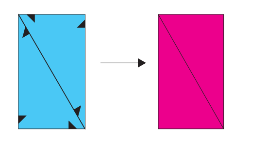
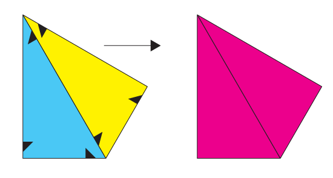

Flip and Fuse
A couple of primitive operations were sufficient to create and manipulate any possible shape generated in the domain of our problem.
Primitive Operation Flip
The primitive operation shape:flip simply takes a shape and creates a new copy of it with inverted orientation.
(shape:flip (make-shape '((1/2 1/3) (1 1/6) ((* 1/2 (sqrt 3)) 1/2)))

Primitive Operation Fuse
The primitive operation shape:fuse two shapes and a selected edge from each shape and fuses them together only if (1) the edges are of the same length, (2) the edges meet with the same orientation, and (3) once the shapes are fused they only overlap in the selected edges or in sequences of adjacent edges that can be correctly fused as well.
(shape:fuse (make-shape '((1/2 1/3) (1 1/6) ((* 1/2 (sqrt 3)) 1/2)) 1)
(make-shape '((1/2 1/3) (1 1/6) ((* 1/2 (sqrt 3)) 1/2)) 1))
Composition
The composition of flip and fuse is useful to create more interesting shapes.
(shape:fuse (make-shape '((1/2 1/3) (1 1/6) ((* 1/2 (sqrt 3)) 1/2)) 1)
(shape:flip (make-shape '((1/2 1/3) (1 1/6) ((* 1/2 (sqrt 3)) 1/2))) 1))